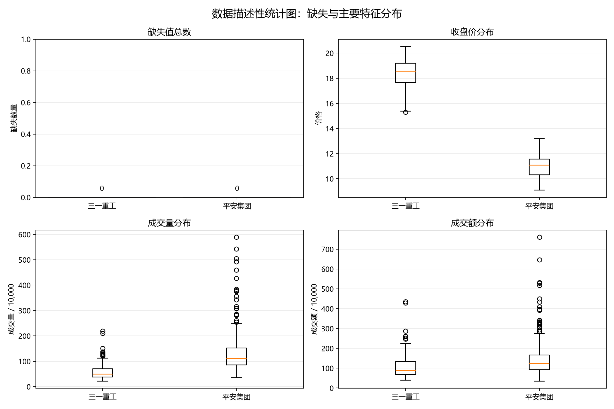
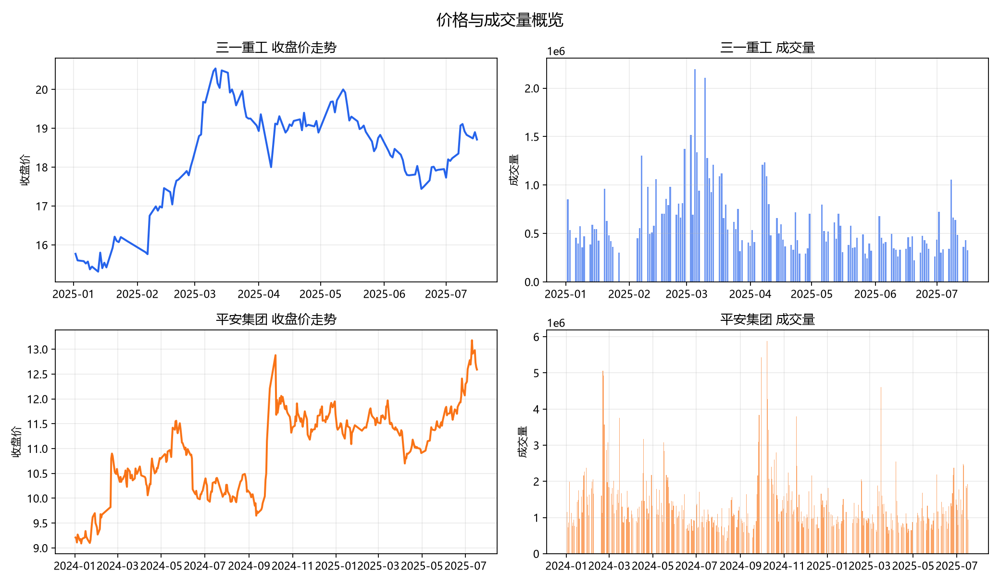
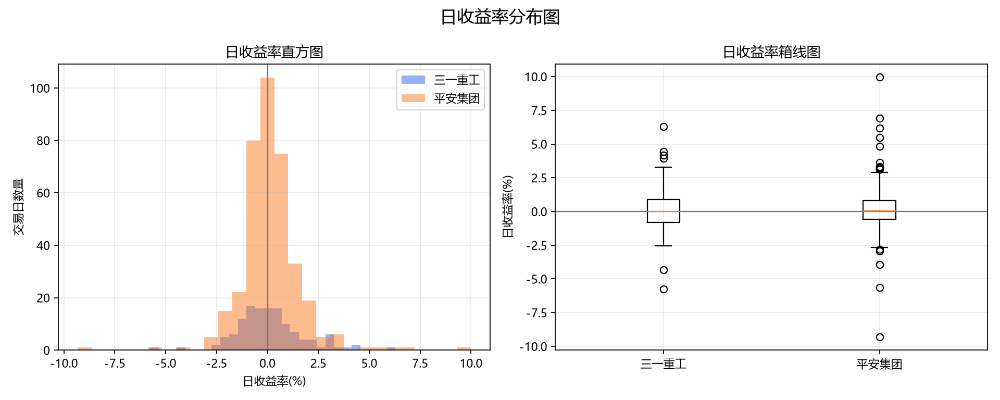
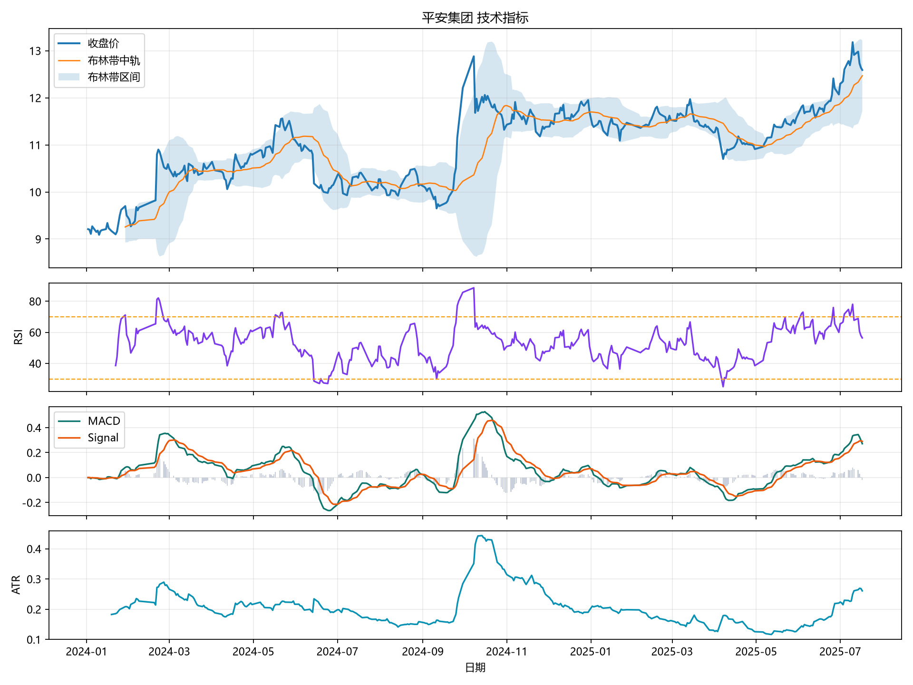
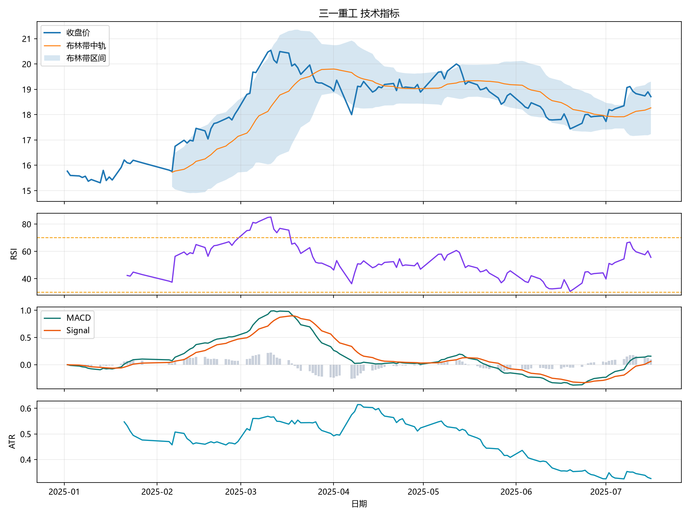

股票数量2
最新 RSI 均值56.02
图表数量5
数据描述性统计图：缺失与特征分布

价格与成交量概览

日收益率分布图

技术指标说明
| 指标 | 名称 | 计算方法 | 金融应用 | 解读提醒 |
|---|---|---|---|---|
| RSI | Relative Strength Index / 相对强弱指数 | 先计算每日收盘价变化，U=max(涨跌幅, 0)，D=max(-涨跌幅, 0)；RS=WilderAvg(U, 14)/WilderAvg(D, 14)；RSI=100-100/(1+RS)。 | 衡量上涨动能与下跌动能的相对强弱。常用 70 以上观察超买、30 以下观察超卖，也常配合价格背离判断动能衰减。 | RSI 是动量指标，不是单独买卖信号。强趋势中 RSI 可以长时间维持高位或低位，需要结合趋势和成交量判断。 |
| MACD | Moving Average Convergence Divergence / 指数平滑异同移动平均线 | EMA_n 使用 alpha=2/(n+1) 递推；DIF=EMA12(收盘价)-EMA26(收盘价)；Signal/DEA=EMA9(DIF)；本 demo 的柱状图= DIF-Signal。 | 识别趋势动量变化。常看 DIF 与 Signal 的金叉/死叉、零轴上方或下方的位置，以及价格与 MACD 的背离。 | MACD 本质上来自移动平均，天然滞后；震荡行情里交叉信号容易反复。一些行情软件会把柱状图写成 2*(DIF-DEA)，本项目没有乘以 2。 |
| Bollinger Bands | 布林带 | 中轨=SMA20(收盘价)；标准差=收盘价的 20 日滚动标准差；上轨=中轨+2*标准差；下轨=中轨-2*标准差。 | 用均线和波动率描述价格运行区间。带宽收窄常表示波动压缩，突破后可能进入趋势扩张；价格靠近上下轨可辅助观察短期偏热或偏冷。 | 触及上轨不等于必须卖出，触及下轨也不等于必须买入。趋势行情中价格可能沿上轨或下轨运行，需要结合方向和带宽变化。 |
| ATR | Average True Range / 平均真实波幅 | TR=max(high-low, abs(high-前收盘), abs(low-前收盘))；ATR=WilderAvg(TR, 14)。 | 衡量价格波动幅度，常用于设置止损距离、比较不同股票的波动水平、辅助仓位管理。 | ATR 只衡量波动大小，不判断涨跌方向。ATR 上升说明波动变大，但不代表一定上涨或下跌。 |
最新交易日指标
| stock_name | ts_code | trade_date | close | rsi_14 | macd | macd_signal | bb_upper_20 | bb_lower_20 | atr_14 |
|---|---|---|---|---|---|---|---|---|---|
| 三一重工 | 600031.SH | 2025-07-16 | 18.7100 | 55.6430 | 0.1559 | 0.0609 | 19.3031 | 17.2309 | 0.3254 |
| 平安集团 | 000001.SZ | 2025-07-17 | 12.5900 | 56.3944 | 0.2715 | 0.2900 | 13.2181 | 11.7169 | 0.2607 |
000001_SZ

600031_SH

描述性统计
| stock_name | column | mean | std | min | max |
|---|---|---|---|---|---|
| 三一重工 | open | 18.2441 | 1.3740 | 15.3100 | 20.5000 |
| 三一重工 | high | 18.4633 | 1.3773 | 15.5400 | 20.7500 |
| 三一重工 | low | 18.0376 | 1.3453 | 15.2300 | 20.2300 |
| 三一重工 | close | 18.2549 | 1.3625 | 15.3100 | 20.5400 |
| 三一重工 | pre_close | 18.2348 | 1.3713 | 15.3100 | 20.5400 |
| 三一重工 | change | 0.0201 | 0.3030 | -1.1000 | 0.9900 |
| 三一重工 | pct_chg | 0.1279 | 1.6795 | -5.7592 | 6.2817 |
| 三一重工 | vol | 612,098.4864 | 340,872.8182 | 222,382.5400 | 2,198,570.1100 |
| 三一重工 | amount | 1,127,768.7695 | 673,495.4033 | 388,409.7680 | 4,353,081.5270 |
| 平安集团 | open | 10.9382 | 0.8440 | 9.0500 | 13.4300 |
| 平安集团 | high | 11.0498 | 0.8554 | 9.1800 | 13.4300 |
| 平安集团 | low | 10.8537 | 0.8300 | 8.9600 | 12.8900 |
| 平安集团 | close | 10.9542 | 0.8367 | 9.0900 | 13.1800 |
| 平安集团 | pre_close | 10.9420 | 0.8361 | 9.0900 | 13.1800 |
| 平安集团 | change | 0.0122 | 0.1658 | -1.2000 | 0.9800 |
| 平安集团 | pct_chg | 0.1225 | 1.4856 | -9.3168 | 9.9796 |
| 平安集团 | vol | 1,320,700.0347 | 753,730.3443 | 353,013.4600 | 5,888,977.7800 |
| 平安集团 | amount | 1,458,609.3165 | 883,746.6615 | 353,251.3510 | 7,602,664.0240 |